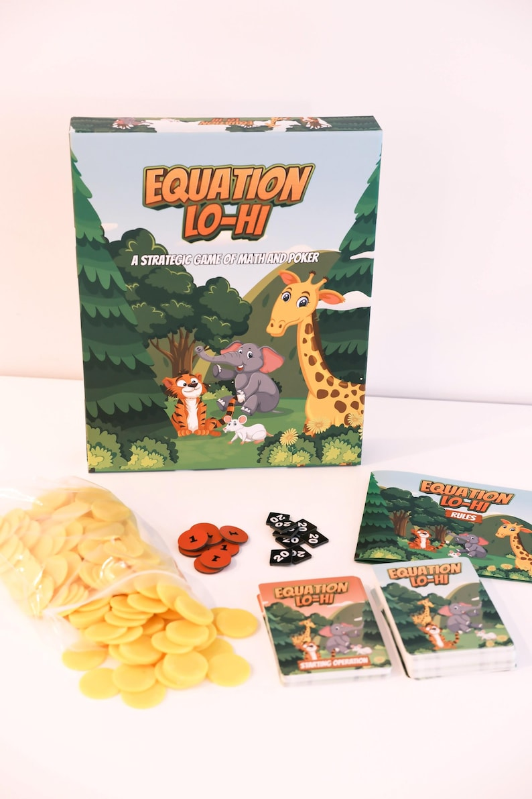
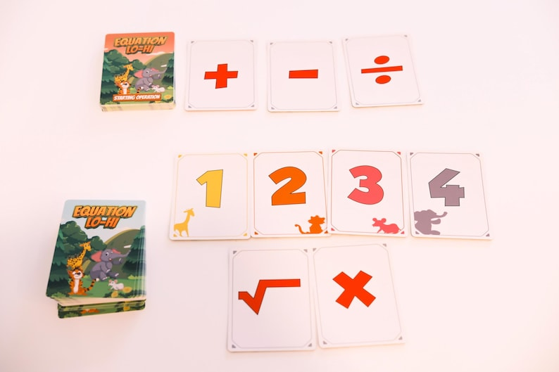
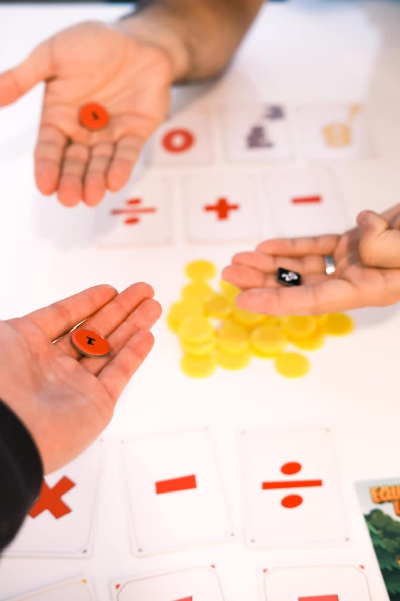

01 / BUILD
Play the numbers.
Turn your number and operation cards into an equation. Look for a way to get close to 1 or 20.
YOUR NEXT GAME NIGHT, FIGURED OUT.
Clever equations. Bold bets. Brilliant bluffs.
Meet Equation Hi-Lo, where the best hand is only half the story.

3–8 players
10+ recommended age
Math meets poker
Made for your table
FROM THEIR TABLE TO YOURS.
“The game is fun and well made.”
“Great, arrived super fast and was just what niece wanted”
Excerpts from verified-purchase reviews on Etsy.
THE IDEA IS SIMPLE. THE STRATEGY IS YOURS.
Build an equation close to 1 or 20.
Then back yourself—or your poker face.
01 / BUILD
Turn your number and operation cards into an equation. Look for a way to get close to 1 or 20.
02 / BET
Wager chips on your equation. A strong hand helps. A convincing bluff might help even more.
03 / REVEAL
Choose low or high, then reveal. The closest equation on each side wins. Feeling bold? Try for both.
SAME NUMBERS. DIFFERENT GAME.
See how rearranging four number cards changes everything.
Right on target. That’s a low worth backing.
Example hand includes multiplication. Standard order of operations applies.LITTLE PLAYERS. BIG THINKING.
Give kids a reason to play with the numbers. Every hand is a chance to try an equation, check the answer, and discover another way to get there.
Practice adding, subtracting, multiplying, and dividing with a target to aim for.
See why multiplying first changes an answer—and how rearranging cards changes it again.
Ask “How did you get that?” Compare ideas, explain a move, and try a different approach together.
Recommended for ages 10+. Play alongside your child and match the pace to their comfort with arithmetic.
Try a practice matchWhich part comes first?
FIRST3 × 4 = 12
THEN8 + 12 − 1 = 19
Just one away.
Can you get closer?
A good question for your next game night.
Let them explain the move.
Join two computer opponents, build equations, and play with chips, low, high, and swing bets. Optional hints help you find your feet.

Good things comeUNBOX YOUR NEXT GOOD NIGHT.
A deck of possibilities, a pile of chips, and a reason to put your phones down.

HELLO, WE’RE HAYZGAMES.
We’re a couple in San Francisco who love a good game night. After seeing an equation game on a Korean game show, we wanted to play it ourselves—but couldn’t find a copy.
So we made one. Our friends loved it, and one homemade game became something we could share with more tables. That’s how Equation Hi-Lo began.
See you at the table, HayzGamesBEFORE YOU DEAL IN.
You’ll use arithmetic, including addition, subtraction, multiplication, division, and sometimes square roots. Being comfortable with the basics helps—but reading the table and deciding when to bet are part of the fun, too.
Yes. Building and comparing equations gives kids opportunities to practice arithmetic, order of operations, and explaining their reasoning. The recommended age is 10+. For a gentler introduction, try our online practice match: there’s no timer, and hints are always welcome.
Equation Hi-Lo is for 3–8 players, with a recommended age of 10 and up. Choose a group comfortable with the arithmetic, and keep the rulebook handy for your first game.
Absolutely. Play a free practice match against the computer, or use the equation optimizer to explore a hand. These are practice tools; use the included rulebook for the rules at your table.
Order directly from HayzGames on Etsy. You’ll find current pricing, availability, and shipping details there.
THE NEXT MOVE IS YOURS.
3–8 players. A whole lot of possibilities.